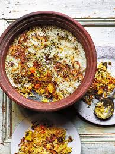

Biryani Recipe
Home

Ingredients (US cup = 240ml )
Marinade for chicken biryani
-
½ kg (1.1 lbs) chicken (skinless bone-in or boneless, large pieces such
as thighs, drumsticks, legs or mix of all)
- 3 tablespoons plain yogurt (curd or dahi)
-
1¼ tablespoons ginger garlic paste (1 inch ginger & 4 garlic cloves
crushed)
- ½ to ¾ teaspoon salt (adjust to tase)
- ¼ teaspoon turmeric
-
½ to 1 teaspoon red chilli powder (or paprika) (use less spicy variety)
- ½ to 1 tablespoon garam masala (or biryani masala) (Refer notes)
- 1 tablespoon Lemon juice (optional)
Whole spices (skip if you don’t have any)
- 1 bay leaf (tej patta)
- 4 green cardamoms (choti elaichi)
- 6 cloves (lavang)
- 1 inch cinnamon (dalchini)
- 1 star anise (chakri phool )
- ¾ teaspoon shahi jeera (caraway seeds) (substitute with cumin)
- 1 strand mace (javitri, omit if you don't like)
Other ingredients for chicken biryani
- 2 cups basmati rice (aged rice only)
- 2 tablespoon ghee or Oil
- 1 large onion sliced thinly
- ¼ to ½ cup mint leaves chopped fine (about 15 leaves)
- 1 green chili (slit or chopped)
- ¼ cup plain yogurt (Indian curd)
- ¼ to ½ teaspoon red chili powder (optional, for heat)
- 1 teaspoon garam masala (or biryani masala)
- 3 cups water (3½ cups for pot) (refer notes, more if needed )
- ¾ teaspoon salt (to stir in water)
- 2 tablespoon fried onions (optional)
- 1 pinch saffron (optional)(soaked in 2 tbsps hot milk)
Instructions
Preparation
-
To a bowl, add yogurt, ginger garlic paste, salt, garam masala,
turmeric, lemon juice & red chili powder.
-
Mix up well and taste the marinade. Add more salt and spice if needed.
-
Make slits on the chicken pieces. Add it to the marinade & mix well.
Cover and set aside for 1 hour to overnight.
-
Rinse basmati rice thrice and soak for 30 mins. Drain to a colander
after 30 mins.
How to make Chicken Biryani
- Heat ghee or oil in a pot or pressure cooker.
-
Add whole spices – bay leaf, cardamoms, cloves, cinnamon, star anise,
shahi jeera & mace. Skip them if you do not have.
-
When the spices begin to sizzle, add onions & fry them evenly stirring
often until uniformly light brown but not burnt.
- Add chicken & saute until pale for 5 mins on a medium heat.
-
Cover & cook on a low flame until the chicken is soft cooked or tender.
Saute to evaporate any excess moisture in the pot.
-
Taste test and add more salt if needed. Add yogurt (curd), half of the
chopped mint leaves, slit green chili, red chili powder & garam masala.
-
½ to 1 teaspoon red chilli powder, 1 green chili, ¼ cup plain yogurt, 1
teaspoon garam masala
Layering
-
Mix everything well and layer chicken evenly at the bottom. (check
video)
- Spread drained rice in a layer over the chicken.
-
To a separate pot, pour water. If cooking in a pot use more water.
-
Add salt and mix. Taste the water. It must be slightly salty. Bring this
to a rolling boil.
-
Pour 2 cups of this hot water across the sides of the cooker or pot.
Gently pour the rest on top of the rice. (check video)
-
Level the rice if needed. Sprinkle the rest of the mint leaves.
Optionally add fried onions & saffron soaked milk if using.
-
Pot method – If cooking in a pot, cover and cook on a medium flame until
the rice in the chicken biryani is cooked completely but not mushy or
undercooked. (Takes me 15 mins, from the time the water boils in the
pot, may be different for you). If the rice is still under cooked or
hard & there is no water at the bottom, pour ¼ to ½ cup more boiling
water depending on the kind of rice used and cook further. When done it
has to be fully cooked, yet remain grainy but not mushy.
-
Cooker method – Set the flame to medium high. Cover & place the whistle.
Cook until you hear 1 whistle. Move the cooker away from the burner to
stop cooking further.
-
Serve from top to the bottom layer. Each serving gets biryani rice from
top and chicken from the bottom layer.
-
Enjoy chicken biryani with raita and sliced veggies, papad and shorba
(biryani gravy).
Notes
-
Water: The amount of water to use depends on the brand of basmati rice.
Not all basmati rice need the same amount of water. So for pot method,
start with 3 cups water. Towards the end if the rice is undercooked,
pour ¼ to ½ cup boiling water and cook further. You will need to
experiment a bit with the right amount here.
-
Tomatoes: An authentic biryani never uses tomatoes, so I have not used
in the recipe. It does not add any taste infact alters the flavor. If
you still want to use you an follow the second recipe I have posted
below.
-
Yogurt or curd: Do not use sour curd. If the curd is slightly sour then
skip using lemon juice.
-
Rice: I have used lalquilla basmati rice, old malai. Any other basmati
rice may need less or more water. Make sure to use as needed.